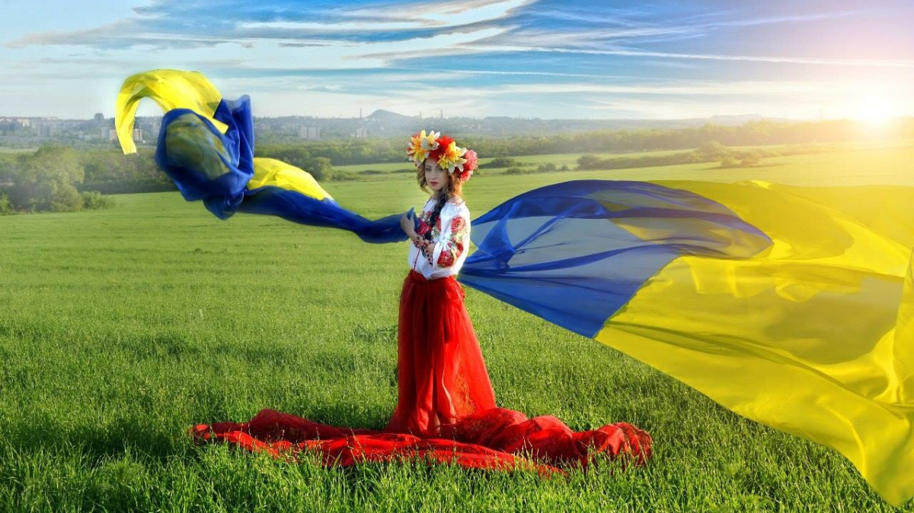

Культура України
Україна – це країна з багатовіковою історією, що зберегла свої унікальні традиції, звичаї та культурну спадщину. Українська культура – це не лише стародавні обряди, але й живий прояв душі народу, що передається з покоління в покоління. Вона відображається в музиці, танцях, вишиванках, народних святах та навіть у повсюдному житті.
Традиції українців тісно пов'язані з природою, вірою та історичними подіями. Кожне свято чи обряд несе глибокий символізм і має свою історію. Чому українці на Різдво співають колядки? Як виник звичай пекти паски на Великдень? Чому вишиванка визнана не просто одягом, а справжнім оберегом? Відповіді на ці запитання відкривають світ унікальної української культури.
Не менш важливу роль відіграє народна музика – від сумних, але чаруючих дум до запальних танцювальних мелодій. Гопак, козачок, аркан – ці танці вражають своєю енергією та динамікою. А українські музичні інструменти, такі як бандура, цимбали та сопілка, створюють особливе звучання, яке впізнають у всьому світі.
Традиційний одяг українців – це більше, ніж просто естетика. Вишиванка, прикрашена орнаментами, несе в собі код предків і відображає регіональні особливості. Кожен візерунок, кожна кольорова гама має своє значення та використовується для захисту й гармонії. Культура України – це її обличчя, її душа, її сила.
Традиції та звичаї
Українські традиції тісно пов’язані з природою, річним календарем та історичною спадщиною. Багато з них збереглися донині й відзначаються в сучасному суспільстві.
Найвідоміші народні свята
- Різдво Христове — одне з найважливіших свят в українській культурі, яке відзначають 7 січня. У цей день сім’ї збираються разом на Святу вечерю, яка складається з 12 пісних страв. Головною стравою є кутя — символ достатку та єднання. Ввечері молодь ходить колядувати, співаючи давні обрядові пісні та бажаючи господарям щастя й добробуту.
- Великдень символізує перемогу життя над смертю та є найголовнішим християнським святом. Українці готуються до нього протягом Великого посту, а в ніч перед святом освячують у церкві паски, писанки, ковбаси та інші святкові страви. Вранці люди вітають одне одного словами: «Христос Воскрес!» — «Воістину Воскрес!». У цей день також популярними є гаївки — веселі весняні пісні та хороводи.
- Івана Купала святкують у ніч із 6 на 7 липня. Це свято літнього сонцестояння, пов'язане з вогнем, водою та магічними обрядами. Дівчата плетуть вінки та пускають їх на воду, ворожачи на судженого. Хлопці, у свою чергу, намагаються їх виловити. Молодь стрибає через вогонь, що символізує очищення, а найсміливіші вирушають шукати цвіт папороті — легендарну квітку, яка дарує щастя та багатство.
Українські традиції та обряди
Українська культура багата на традиції, які передаються з покоління в покоління. Вони пов’язані з річним циклом, родинним життям та світоглядом народу. Кожен обряд має своє значення та особливий символізм.
Родинні обряди
- Весілля — одна з найяскравіших українських традицій. Раніше воно складалося з кількох етапів: сватання, оглядин, заручин і самого весілля. Молодят благословляли батьки, а дівчина передавала свою косу в знак прощання з дівоцтвом. Важливою частиною було випікання короваю, який символізував щастя та добробут.
- Хрестини — перше велике свято в житті дитини. Малюка хрестили в церкві, а хрещені батьки брали на себе відповідальність за його духовний розвиток. Важливим атрибутом була крижма — спеціальна тканина, в яку загортали немовля після обряду.
- Поминальні традиції — українці шанують пам’ять предків, а особливим днем є Проводи або Гробки, коли люди відвідують могили рідних, запалюють свічки та залишають поминальні страви.
Календарні традиції
- Щедрування та колядування — давня традиція, пов’язана з зимовими святами. Діти та молодь ходять від хати до хати, співають обрядові пісні, бажають достатку та отримують за це частування.
- Масляна — свято проводів зими, що супроводжується веселими гуляннями, катанням на санях і поїданням млинців. Це період, коли люди прощалися із зимою та готувалися до Великого посту.
- Жнива — у минулому були важливою частиною життя селян. Останній сніп називали "Дідухом" і приносили в дім як символ родючості та добробуту.
Українські традиції глибоко вкорінені в історію та відображають душу народу. Вони допомагають зберегти зв’язок між минулим і сучасністю, нагадуючи про силу єдності, родинних цінностей та шанування природи.
Народна музика та танці
Українська народна музика — це душа нації, яка зберігає в собі історію, почуття та мрії народу. Вона супроводжує українців у різних сферах життя: від повсякденного побуту до урочистих святкувань. Народні мелодії передають емоції – від сумних, задумливих дум до запальних танцювальних мотивів. У музиці відображені любов до рідної землі, героїчні подвиги козаків, сімейні цінності та віра в майбутнє.
Українські народні музичні інструменти
Важливу роль у створенні народних мелодій відіграють традиційні українські інструменти:
- Бандура – символ української музики. Цей струнний інструмент використовували кобзарі – народні співці, які виконували думи та історичні пісні про життя козаків.
- Цимбали – струнний ударний інструмент, що особливо поширений на заході України. Їхнє звучання додає мелодіям дзвінкої легкості.
- Сопілка – духовий інструмент, який має ніжне та мелодійне звучання. Її часто використовували для гри пастухи в Карпатах.
- Трембіта – найдовший музичний інструмент у світі, що використовується в гуцульських традиціях. Її звук чути на великі відстані, тому її використовували для сповіщення важливих подій.
- Кобза – давній струнний інструмент, який часто плутають із бандурою. На кобзі виконували козацькі балади та історичні пісні.
Українські народні танці
Народні танці України вражають своєю енергійністю, ритмічністю та грацією. Вони є невід’ємною частиною свят, народних гулянь і навіть військових традицій.
Основні українські танці:
- Гопак – найвідоміший український танець, який виник у козацькому середовищі. Його особливістю є акробатичні елементи: стрибки, розмахування шаблями та стрімкі обертання. Виконувався спочатку лише чоловіками, але згодом став популярним і серед жінок.
- Аркан– бойовий чоловічий танець гуцулів, що символізує братерство та силу. Виконується у колі, а центральний танцівник задає темп і рухи.
- Козачок– веселий і швидкий танець, у якому чоловіки демонструють силу й спритність, а жінки — грацію та ніжність.
- Метелиця– народний круговий танець, у якому учасники рухаються плавно й швидко, немов зимовий вихор.
- Коломийка– запальний гуцульський танець, який супроводжується веселими жартівливими куплетами. Його ритм швидкий, а рухи – динамічні.
Українські народні танці не тільки відображають культуру народу, а й передають його характер – сильний, життєрадісний та вільний. Завдяки своїй красі та енергії вони продовжують вражати світ і є гордістю нашої нації.